Part Context
Part: Part 4 - Architectural Patterns
Position: Chapter 14 of 60
Why this part exists: This section explains the structural patterns teams use to organize services, APIs, reads, writes, and event flows as systems and organizations grow.
This chapter builds toward: service-boundary decisions, team-aligned architecture, and pragmatic system evolution
Overview
Monoliths and microservices are not opposing ideologies. They are architectural responses to different levels of system complexity, organizational scale, and operational maturity. A monolith can be elegant, fast to deliver, and operationally efficient. A microservice architecture can unlock team autonomy and independent scaling, but only when the organization is ready to absorb the extra complexity.
This chapter compares the two approaches honestly. The key question is not which one is modern. The key question is which one best matches the product, the team, the rate of change, and the failure budget.
Why This Matters in Real Systems
- This is one of the most common architecture decisions teams overcomplicate too early.
- The cost of choosing microservices prematurely can be years of distributed-systems overhead with little benefit.
- The cost of keeping a monolith too long can be slow deployments, unclear ownership, and scaling friction in the wrong places.
- Interviewers expect mature candidates to give a nuanced answer rather than a fashionable one.
Core Concepts
Modular monolith
A monolith packages multiple capabilities into one deployable unit, but those capabilities can still be structured with strong internal boundaries and discipline.
Microservices
A microservice architecture splits a system into independently deployable services with clearer ownership boundaries and networked communication.
Boundary design
The real challenge is deciding where boundaries belong. Product domains, data ownership, change frequency, and team ownership matter more than the absolute number of services.
Evolution over time
Many successful systems begin as monoliths and extract services only when organizational or scaling pressure makes the cost worthwhile.
Key Terminology
| Term | Definition |
|---|---|
| Monolith | A system packaged and deployed largely as one application unit. |
| Microservice | A small independently deployable service aligned to a focused responsibility. |
| Bounded Context | A domain boundary where a model and language are internally consistent. |
| Service Sprawl | An excessive number of services that increases coordination and operational overhead. |
| Distributed Monolith | A system split into services that remain tightly coupled and difficult to change independently. |
| Strangler Pattern | An incremental migration pattern that gradually replaces behavior in an existing system. |
| Team Autonomy | The ability of a team to build and ship changes without excessive dependency on other teams. |
| Operational Overhead | The cost of deploying, monitoring, securing, and managing the architecture in production. |
Detailed Explanation
Why monoliths remain powerful
A monolith reduces network boundaries, simplifies transactions, keeps local development easier, and lowers operational overhead. A well-structured monolith can support significant scale when paired with good modularity, caching, and database design.
What microservices really buy
Microservices help when different domains evolve at different speeds, need different scaling behavior, or must be owned by separate teams. They are especially valuable when one deployable unit would otherwise become a coordination bottleneck across many teams.
What microservices cost
Every extracted service introduces network calls, deployment pipelines, tracing needs, authentication propagation, versioned interfaces, failure modes, and ownership negotiation. These costs are real and ongoing. They should be paid only when they buy something meaningful.
Decision framework
A practical decision framework asks: Is the team large enough? Are domain boundaries stable enough? Is there real independent scaling need? Is operational maturity strong enough for distributed debugging, CI/CD, monitoring, and service governance? If the answer is mostly no, a modular monolith is usually the stronger architecture.
Evolution is safer than ideology
Extracting one service because its domain is unstable, high-scale, or risk-sensitive is very different from rewriting an entire product into dozens of services. Successful migrations are usually incremental and pressure-driven.
Diagram / Flow Representation
Monolith vs Microservices Shape

Evolution Path

Real-World Examples
- Many Amazon teams operate services because team ownership and deployment autonomy matter at their scale.
- Netflix famously moved to microservices under scale and organizational pressure, not as a greenfield fashion choice.
- Many successful startups remain on modular monoliths longer than outsiders expect because the simpler system is more productive.
- A product with one team and modest scale may get more business value from better modularity than from service decomposition.
Case Study
Netflix migration lessons
Netflix is often cited as a microservices success, but the real lesson is not “copy Netflix.” The lesson is that architecture should evolve when scale, resilience, and team structure demand it.
Requirements
- Different product areas need to evolve independently.
- Service failures should be isolated instead of collapsing one giant deployable unit.
- Independent scaling is needed because workloads differ dramatically across the platform.
- Teams need fast deployment without coordinating every change globally.
- Observability and automation must exist to support the resulting distributed complexity.
Design Evolution
- A monolithic origin becomes harder to evolve as product surface area and traffic grow.
- Focused services are extracted around clear product or platform domains.
- Tooling, deployment automation, tracing, and failure isolation mature alongside the architecture.
- The system becomes a platform of services, but only because the organization is capable of running one.
Scaling Challenges
- Service sprawl can replace monolith pain with distributed chaos if boundaries are weak.
- Cross-service synchronous calls can create a distributed monolith if teams are not careful.
- Operational maturity becomes a prerequisite, not an optional improvement.
- Data ownership must become clearer as services multiply.
Final Architecture
- Clear domain-aligned services with explicit contracts.
- Strong observability, CI/CD, and traffic management to support frequent safe releases.
- Independent scaling by workload rather than one-size-fits-all deployment.
- Incremental extraction instead of total rewrite.
- Constant attention to avoiding distributed-monolith coupling.
Architect's Mindset
- Choose the simplest architecture that fits real organizational and technical pressure.
- Use modularity before distribution wherever possible.
- Align boundaries with domain ownership and change frequency, not with fashion.
- Treat observability, platform tooling, and service governance as prerequisites for microservices.
- Evolve architecture in steps, not slogans.
Common Mistakes
- Adopting microservices because they sound senior or modern.
- Keeping a monolith with poor internal boundaries and then blaming the monolith concept itself.
- Extracting many services without clear ownership or contract discipline.
- Building a distributed monolith with heavy synchronous coupling across every service.
- Ignoring the operational cost of deployment, tracing, and security in a service-heavy architecture.
Interview Angle
- Interviewers often ask this topic to see whether you can argue from context rather than dogma.
- Strong answers explain when a modular monolith is the correct choice and when microservices become justified.
- Candidates stand out when they mention team size, domain boundaries, deployment independence, and operational maturity.
- A weak answer says “microservices scale better” without discussing the cost of distribution.
Quick Recap
- Monolith and microservices are tools, not identities.
- A modular monolith is often the right starting point.
- Microservices buy independent scaling and ownership only when the organization can support the extra complexity.
- Boundary design matters more than service count.
- Incremental evolution is usually safer than full rewrites.
Practice Questions
- When is a modular monolith the better architecture?
- What real pressures justify extracting a microservice?
- How do you detect that a distributed monolith is forming?
- Why is operational maturity so important for microservices?
- What is the first service you would extract from a growing product and why?
- How do team structure and domain boundaries influence architecture?
- What are the costs of service decomposition beyond code changes?
- How would you explain this decision to a leadership team asking for “modern architecture”?
- What migration risks come with a large rewrite?
- Why is internal modularity still important inside a monolith?
Further Exploration
- Carry this boundary mindset into API gateways, event-driven architecture, and CQRS.
- Study domain-driven design and bounded contexts for better extraction decisions.
- Review architecture stories where teams regretted both premature decomposition and overly long consolidation.
Navigation
- Previous: Distributed Transactions
- Next: API Gateway Pattern